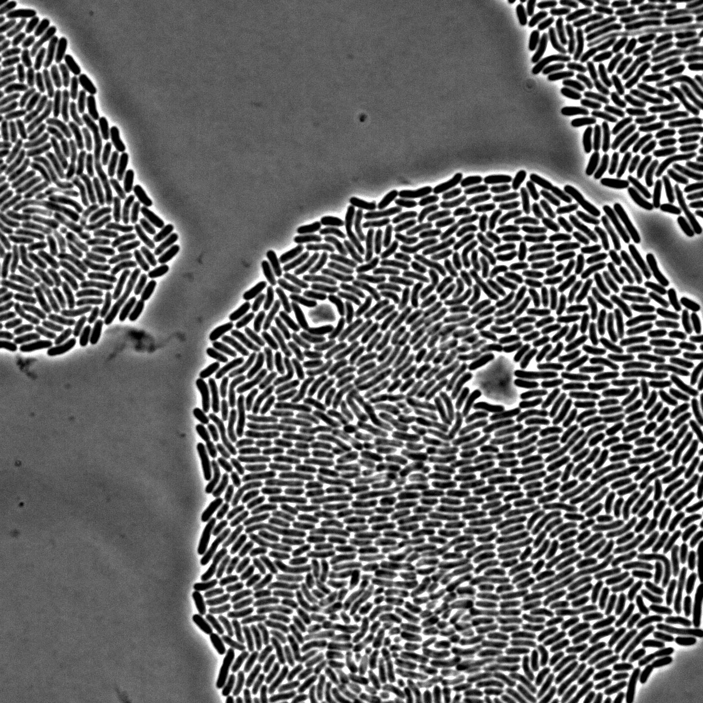
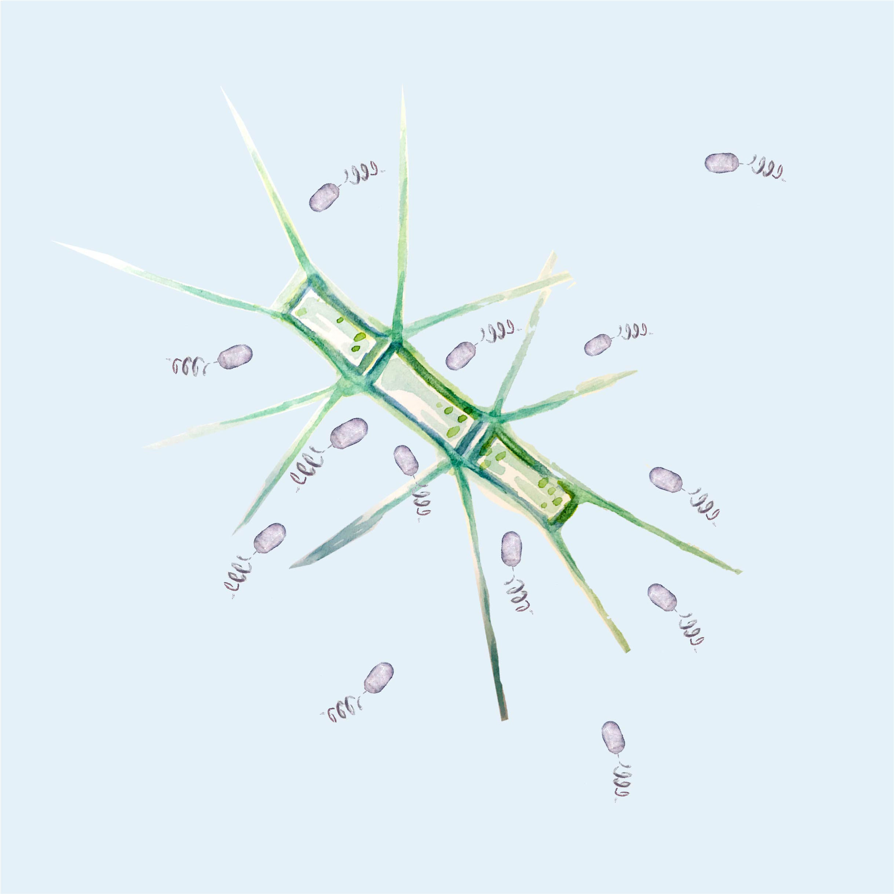
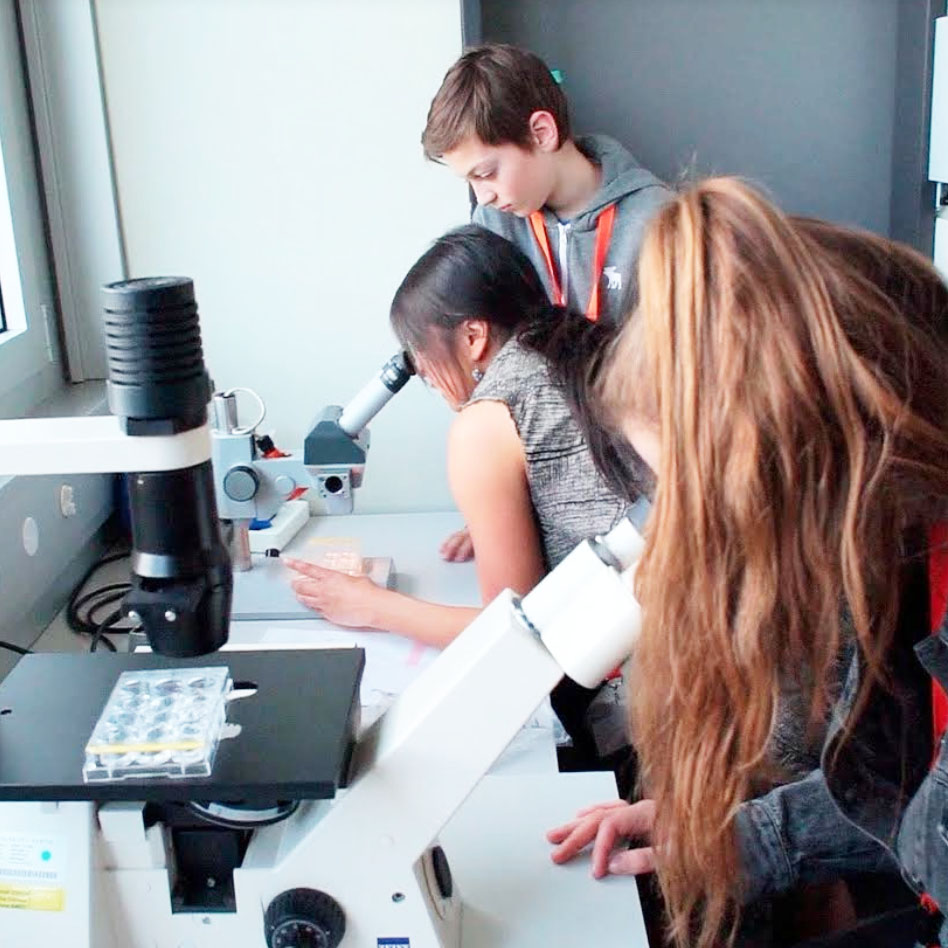

About Me
Hi! I'm Jen.
I'm a postdoctoral research fellow with
Carolina Tropini
at the University of British Colombia in Vancouver. I trained
previously with
Roman Stocker
at MIT and ETH Zürich and with
Amy Kiger
at UC San Diego.
My scientific exploration of the world we share occurs through three
main avenues: research, visualization, and outreach. For more
details, please check out
my projects page or
publications.
Research
Watching life do its thing | Many key processes are invisible to the naked eye. I specialize in microscopy and complementary tools, like microfluidics, to understand biological dynamics at the microscsale.
Visualization
Bringing the invisible into view | I'm a visual learner, even a mental image makes a difference. To share what I've learned and appreciate from science, I turn to illustration and data visualization tools.
Outreach
Sharing the love | I didn't grow up around scientists, but was lucky to have met those keen to share their world. Strong communication is critical for public education and the future of science. Plus, it's great fun :)